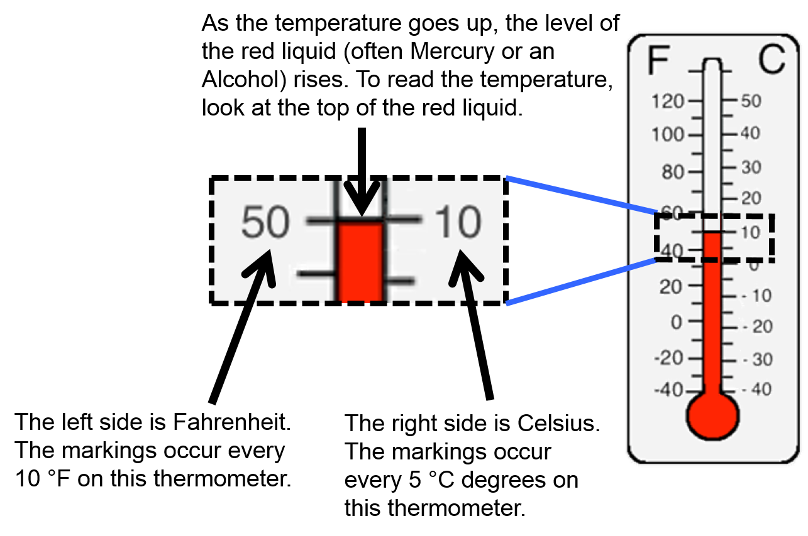
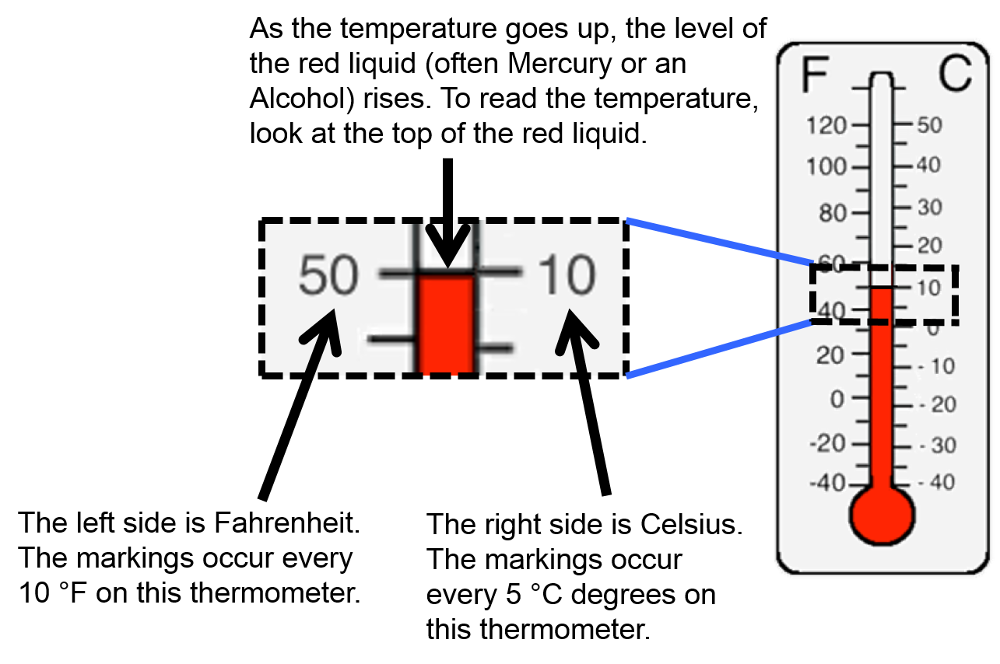

Measuring Temperature
We use Thermometers to measure temperature.

Practice Measuring Temperature
Converting Temperature
We use both Fahrenheit and Celsius for measuring temperature. However, sometimes you need to convert from one scale
to the other.
- It is important to be familiar with both because most countries use Celsius while a few use Fahrenheit.
- We perform science experiments using Celsius as the main temperature scale.
- We use Fahrenheit in the U.S. when we talk about the temperature outside or in the room. We also use it when we are cooking.
Practice Temperature Conversion
We use Thermometers to measure temperature.
 Practice Measuring Temperature- It is important to be familiar with both because most countries use Celsius while a few use Fahrenheit.
- We perform science experiments using Celsius as the main temperature scale.
- We use Fahrenheit in the U.S. when we talk about the temperature outside or in the room. We also use it when we are cooking.
We use both Fahrenheit and Celsius for measuring temperature. However, sometimes you need to convert from one scale to the other.